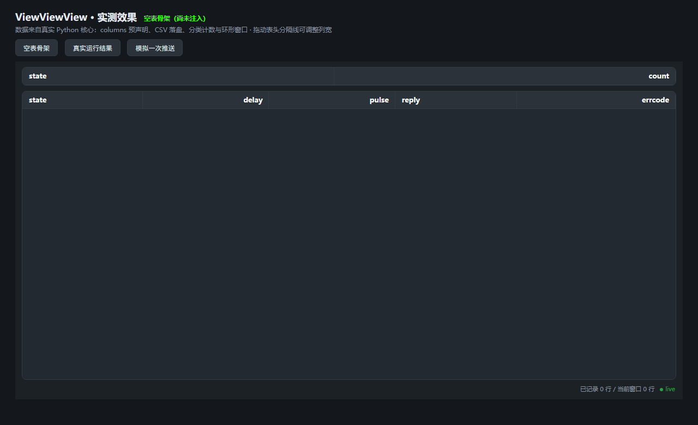
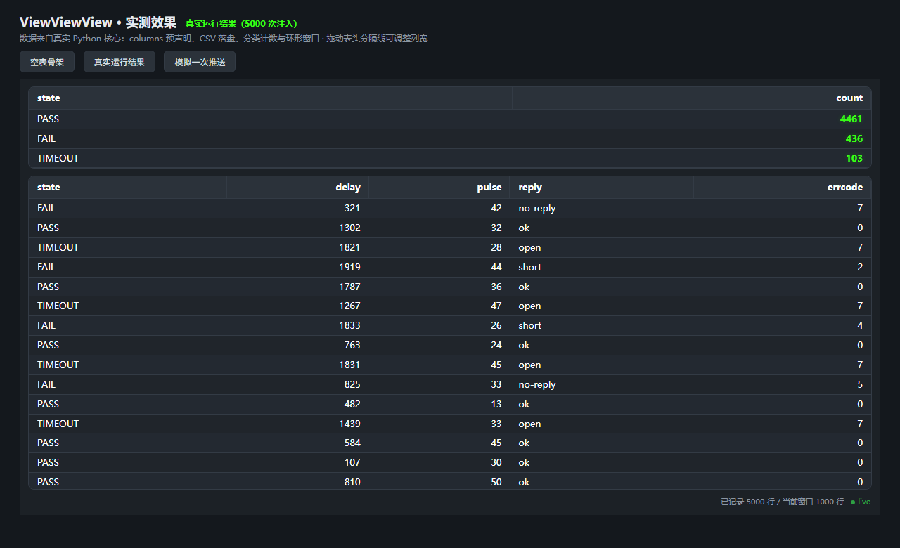
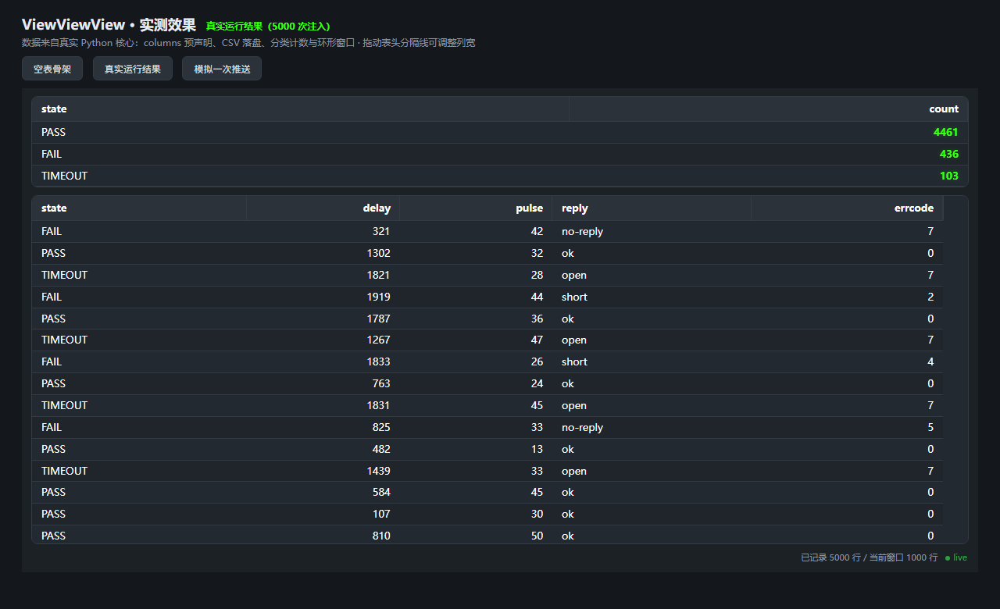

真实 Python 核心产出的载荷（5,000 次模拟注入），经 bundled 前端渲染；列宽图为合成拖拽后的效果。

① 实例化 columns=... 后 vt.show()：5 列空表骨架，尚未注入

② 真实运行结果：上窗分类计数（荧光绿）、下窗最新 1000 行明细（live_rows 窗口）、底部总数与 live 状态

③ 拖动表头分隔线：state 列收窄、delay 列加宽（宽度在实时刷新间保持）